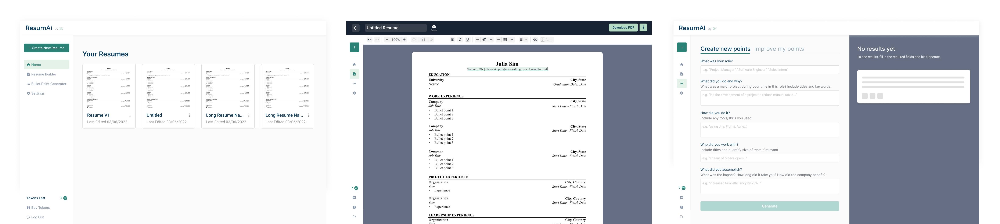

ResumAI
my role
User Research
Visual Design
Product Thinking
Interaction Design
Prototyping
Visual Design
Product Thinking
Interaction Design
Prototyping
team
1 Designer (myself)
2 Product Managers
4 Developers
2 Product Managers
4 Developers
tools
Figma
duration
March 2022 - Present (ongoing)
V3 launched here
V3 launched here
Context
Wonsulting provides consulting and coaching to
help those from non-target schools and non-traditional backgrounds land their dream careers.
Problem Discovery
When Googling "Non target school, job search", I'm faced with endless numbers of forums expressing
feelings of discouragement, concern, and confusion regarding the job search. On Youtube, there is an abundance
of videos showcasing success stories of those from non target schools and their "secret" as to how they managed
to land their dream job. It was evident that there is a need for a solution in this problem space.


Using our personal experience as well as testimonies from previous Wonsulting clients, the team began to map
out the job search journey. We asked ourselves the question:


Job seekers go through and apply to tens, maybe hundreds of job postings during one round of their job search.
We can't necessarily say the same thing with interviews and hiring contracts. It was evident that the "Prep" and "Apply" stages of the
job search journey yielded the most opportunity for impact.


My research identified a clear area of focus - resume creation.

Overview
Solution
ResumeAI - an AI powered resume builder that generates personalized and impactful resume points.
Impact
100K user sign ups within 3 months of launch.
User Research
To better understand how job seekers currently create their resumes and their
pain points, LinkedIn polls and user interviews were conducted.